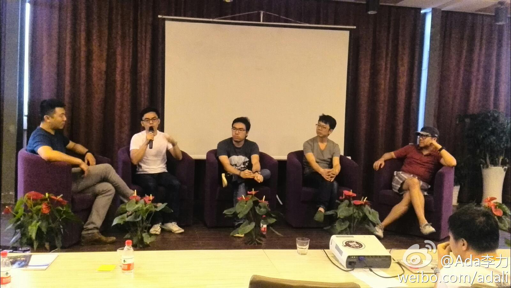

上海虹桥火车站有专售到杭州的柜台，两个售票口的队伍都很长。排队中，前面四人接连出故障，一个拿护照的女士，足足在窗口前呆了10分钟；接着夹塞个同胞，拿一把身份证和一张证明，说有个孩子没身份证，已经排三趟队了，他又在柜台前呆了10分钟，还是没买成。 我在这里:上海·上海虹桥站
接下来是个黑人，代同伴排队 ，结果他们要买的是到别处的票，杭州柜台不卖，那个小胡子同伴用汉语大骂售票员；第四位是位韩国人，买错票了，退票不成，说那就重新买，要来不及了，到苏州，还是不卖，一脸无奈离去；@Ada李力:上海虹桥火车站有专售到杭州的柜台，两个售票口的队伍都很长。排队中，前面四人接连出故障，一个拿护照的女士，足足在窗口前呆了10分钟；接着夹塞个同胞，拿一把身份证和一张证明，说有个孩子没身份证，已经排三趟队了，他又在柜台前呆了10分钟，还是没买成。 我在这里:上海·上海虹桥站
#读书# 全球有6000亿美元的广告预算，其中一类服务是解决了人们找到决定要买东西的需求，这类需求占20%, Google在其中做得最好; 另一类服务都是属于说服类，例如品牌广告，就是游说人们买他们不需要的东西，这类才是大头，占80%， FaceBook要在这类预算中分一杯羹。
#读书# FaceBook COO认为可以在社交网络上发展基于馈赠的虚拟经济，比如为朋友送个生日蛋糕图标。免费的图标当然有，但要特别的生日蛋糕图标就得拿钱买了。— 我曾在FaceBook上花过一美元，送过这样的生日蛋糕给朋友，但一直有疑惑，多花一美元，就表示这个朋友对我更重要吗？
原来是美女要学编程……@刘江总编:我这一转发，估计国内Python界要沸腾了。//@Roy厉: 昨天和瑞丽模特 @StephanieYR 聊天，惊闻她在学习python，然后几经劝阻失败，后发现她是玩真的后，决定微博上帮她寻觅良师益友，不能教的也请帮转。
OpenFans创始人 @帅帅的阿坤 王树坤已受邀参加下周6月28—29日举行的，在北京举办的开源大会。 网页链接@OPENFANS社区:OPENFANS 将于今天晚上21点16分发布 CecOS， 在20点30分举行论坛活动，获奖者将得到CecOS官方T恤哦~活动链接：网页链接 @Ada李力 @程开源 @LUPA开源社区 @开源中国
#Go Mobile#交互设计沙龙的讲师林嘉彬在最后一页演讲稿上说：设计就是用现实主义的方法实现理想主义的目标。— 我怎么觉得把“设计”这个词换成其它词汇也行，比如创业，管理等等。[呵呵] 我在这里:杭州·福云咖啡
#Go Mobile#交互设计沙龙的Panel环节，主持人@彦风_交互设计 的最后一个问题是：如何看iOS的扁平设计？ 四个讲师中，两个讲师明确表示很喜欢。另两个不算喜欢，但赞赏苹果的变革。彦风老师认为其实问题本身不重要，重要的是回答问题的思维角度。 我在这里:杭州·福云咖啡 
抱歉，讲师叫冯嘉彬。 //@老赵:从前，我们请了一个嘉宾，他叫林嘉彬……@Ada李力:#Go Mobile#交互设计沙龙的讲师林嘉彬在最后一页演讲稿上说：设计就是用现实主义的方法实现理想主义的目标。— 我怎么觉得把“设计”这个词换成其它词汇也行，比如创业，管理等等。[呵呵] 我在这里:杭州·福云咖啡
加油! //@CSDN闫辉:谢谢十三年的老板对我的支持！你们羡慕吧？//@蒋涛CSDN: 一个人的创业时代//@闫辉_Life加加:在CSDN工作13年之后，正式开始我的一段创业历程： 缘创派 网页链接 我要做一个帮助创业者找创业者的创业者！ 欢迎朋友们进来
 上海·上海虹桥站
上海·上海虹桥站